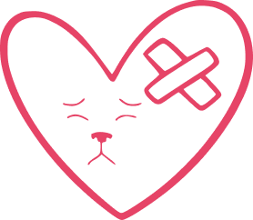
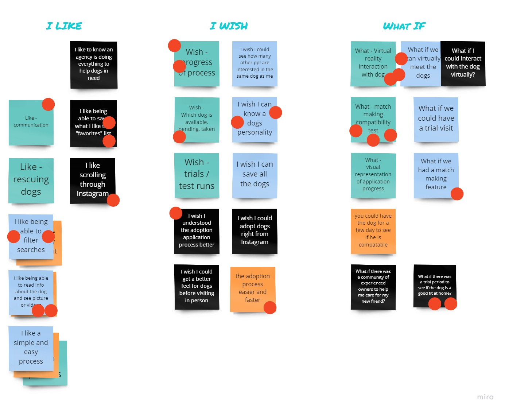

Saving Great Dane Lives
The Great Dane Rescue of North Texas was losing out on dog adoptions due to their non-responsive and cluttered website.
I was part of a team that transformed the site into an enjoyable mobile-friendly design to engage users and get Danes adopted.
The Process
Research Discoveries
Outdated or Incomplete Profiles
Due to time constraints, many rely on the website to decide if an in-person visit will be worth the trip.
Not updating a dog’s adoption status causes frustration or even heartbreak, especially for kids.

Poor Communication
Users were upset by slow responses to emails asking about dogs they may be interested in.
We experienced the same poor communication when we tried to interview staff - no response.
Overwhelming and Unclear Navigation
The current site was simply overwhelming and hard to navigate. Links were placed in confusing pages.
Users could not figure out where to find important information - including finding available dogs.
Ideation
